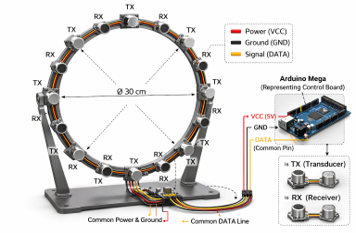
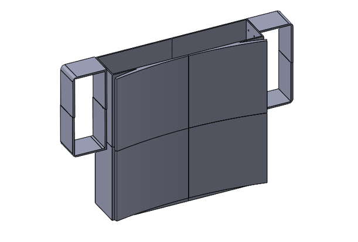
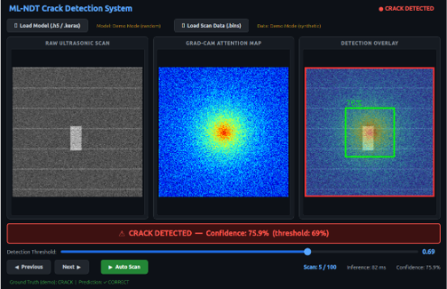

Overview
This project develops an interactive diagnostic system that applies machine learning to ultrasonic non-destructive testing (NDT). NDT is widely used across engineering fields to inspect materials and structures for defects without damaging them, but traditional ultrasonic inspection relies heavily on expert interpretation of scan data. This manual process can introduce variability in results and uncertainty in defect classification.
Our system aims to reduce this subjectivity by combining ultrasonic sensing, signal processing, and deep learning into a single automated diagnostic workflow. Ultrasonic pulses are transmitted into a test specimen and the resulting signals are captured by an array of receivers arranged in a circular ring. From the continuous amplitude data collected by each receiver, the system constructs a spatial scan representation of the inspected material. A convolutional neural network (CNN) then analyzes this scan to classify potential defects and estimate the model's confidence in its prediction.
The project emphasizes trustworthy AI for safety-critical applications. In inspection tasks, failing to detect a real defect can have severe consequences, so the system is designed to prioritize high recall and transparent decision-making. Alongside classification outputs, interpretability techniques such as Grad-CAM are used to highlight which regions of the ultrasonic data influenced the model's decision, enabling engineers to better understand and verify the results.
This work is being developed as part of a multidisciplinary capstone project focused on building a standalone diagnostic terminal that integrates sensing hardware, machine learning models, and an interactive interface. The long-term goal is to demonstrate a proof-of-concept tool capable of improving inspection consistency, reducing reliance on manual interpretation, and supporting engineers with more reliable and explainable defect detection.
The figure below illustrates the current high-fidelity prototype of the ultrasonic scanning system. The design consists of a circular sensor array with alternating transmitters (TX) and receivers (RX) arranged around a 30 cm diameter ring. During operation, transmitters independently emit ultrasonic pulses while all receivers continuously capture the resulting signals. The sensors have been modified to output continuous analog amplitude data rather than simple time-of-flight readings, providing a richer signal for analysis. These signals are routed through a shared power, ground, and data architecture and processed by an Arduino Mega control board. This hardware configuration serves as the foundation for the data acquisition pipeline feeding the machine learning model described below.

System Pipeline
The end-to-end architecture from physical scan to on-screen defect diagnosis:
Baseline Results — Steel Pipe Dataset
Initial model development used the Virkkunen et al. phased-array ultrasonic dataset: 3 real thermal fatigue cracks (1.6–8.6 mm) on 316L stainless steel pipe, augmented to ~20,000 training samples using virtual flaw technology.
| Metric | Default (τ = 0.50) | Optimized (τ = 0.70) |
|---|---|---|
| Recall (Detection Rate) | 97.3% | 94.6% |
| Precision | 68.4% | ~88% |
| Decision Threshold | 0.50 | 0.68 |
Software & ML Framework
The software side of this project is where I made most of my individual contributions. I'm responsible for the full ML pipeline: data loading and preprocessing, model architecture, training and evaluation, threshold optimization, interpretability, and deployment packaging. Below is a walkthrough of the key technical decisions and the reasoning behind each.
Why a CNN?
Ultrasonic scan data, once formatted as a 2D amplitude image, is fundamentally a spatial pattern recognition problem. Convolutional neural networks are the natural fit because they learn hierarchical spatial features automatically, without requiring hand-crafted signal processing features. WHile traditional NDT analysis relies on an inspector manually reading scan images, a CNN automates that visual reasoning.
Alternative approaches like random forests or SVMs would require manual feature extraction (peak amplitude, signal width, frequency content, etc.), which introduces domain assumptions and limits what the model can learn. A CNN operating on raw normalized pixel data sidesteps this as the network discovers which features matter during training.
Proof-of-Concept — Baseline Model
Before building the pipeline for our own hardware, we validated the ML approach using the Virkkunen et al. phased-array ultrasonic dataset, a dataset comprised of 3 real thermal fatigue cracks on 316L stainless steel, augmented to ~20,000 training samples via virtual flaw technology. This baseline model (a VGG-inspired CNN with binary cross-entropy loss and sigmoid output) achieved 97.3% recall and, after threshold optimization, ~88% precision. The baseline confirmed that the core approach of CNN classification and interpretability enabled with Grad-CAM works and gave us a validated training/evaluation pipeline to build on. The details of the baseline results are in the section above.
Our Data Pipeline — Ring Sensor to CNN Input
The real engineering challenge is adapting this approach to work with our own hardware. The baseline model consumed pre-formatted 256×256 phased-array images. Our system produces something fundamentally different: continuous analog amplitude signals from multiple TX/RX sensor pairs arranged in a circular ring. Turning that into a CNN-ready image requires a multi-step data pipeline.
During a scan, each transmitter fires independently while all receivers record continuous amplitude data. This process produces a three-dimensional data array in which, for each transmitter firing, every receiver records a time-series waveform of the returning ultrasonic signal. The reconstruction step maps this sensor-space data back into physical space: each TX/RX pair's signal carries information about the material along the acoustic path between those two sensors, and by combining all pairs, we build a 2D spatial image of the scan area. The circular ring produces a Ø 0.54 m scan field; we extract the largest inscribed square (0.385 m side) and discretize it to a 64×64 pixel grid. Z-score normalization ensures the model isn't biased by absolute amplitude variations between scans.
The reconstruction algorithm is the most technically involved piece of new software. It needs to account for the ring geometry, the number and positions of TX/RX sensors, and assumptions about wave propagation through PLA. This is active development work and represents the primary software challenge in the current project phase.
Programmatic Labeling
One of the advantages of scanning 3D-printed PLA specimens is that defects are designed into the part, we control the exact size, shape, and position of every void, hole, or delamination. This means ground truth labels can be generated programmatically from the CAD file rather than requiring manual annotation by a human inspector. For each scan, we know precisely where the defect is (or that the specimen is clean), which eliminates labeling ambiguity and scales to large datasets without human bottleneck.
Data Augmentation Strategy
The baseline model's virtual flaw augmentation, the process of extracting real crack signals and implanting them into clean scans at varied position, demonstrated that domain-aware augmentation can yield quality results. We plan to apply the same principle to our PLA data: extract defect signatures from scans of known-defective specimens and embed them into clean scans at varied locations. Combined with programmatic labeling, a small number of physical scans (10–20) should yield 500+ usable training samples.
Model Architecture Adaptation
The baseline VGG-inspired architecture serves as a starting point, but the input changes significantly with out hardware. We produce 64×64 pixel arrays from our reconstructed ring data compared with the 256×256 original phased-array images. The network needs fewer parameters at lower resolution, so we intend to adapt to a lighter architecture with fewer convolutional filters and shallower pooling to match the reduced input dimensionality. The 7×1 max pooling layer from the baseline (which extracted amplitude envelopes from raw oscillating waveforms) may not be needed since our reconstruction step already produces amplitude-domain data. These architectural decisions will be finalized once we have real scan data to validate against.
Threshold Optimization
The CNN's sigmoid output produces a continuous probability, but deployment requires the output of a binary decision. The optimization process sweeps thresholds from 0.0 to 1.0 and evaluates precision, recall, F1, and false positive rate at each point. In our safety-critical NDT, recall is the priority as missing a real crack can be dangerous, but precision must be high enough that operators trust the system.
Grad-CAM Interpretability
For a safety-critical application, a prediction alone isn't sufficient, the operator also needs to understand why the model flagged a scan. Grad-CAM (Gradient-weighted Class Activation Mapping) computes which spatial regions of the input most influenced the model's decision, then overlays that as a heatmap on the original scan. We intend to display this heatmap alongside the original scan on our Graphical User Interface (GUI). This implementation will also to not only confirm whether there is a defect but provide a guide as to where the defect might be located.
Hardware Pivot — PLA Specimens + HC-SR04
The original planned design used a custom 3×3 phased-array transducer board. When procurement challenges made this infeasible within the project timeline, the team pivoted to HC-SR04 ultrasonic sensors (40 kHz) arranged in a circular ring, scanning 3D-printed PLA specimens.
The HC-SR04 sensors have been modified ("jailbroken") to output continuous analog readings rather than just time-of-flight values, which gives us a richer signal with constant listening receivers and independently controlled transmissions. The circular ring produces a 0.54 m diameter scan area at 0.05m distance; a 0.385 m square is extracted from within that and discretized into a 64×64 pixel image for the CNN.

Detection GUI
A PyQt5 desktop application built for deployment on the Jetson Orin Nano, to be displayed on an attached touchscreen. Three-panel layout displays the raw ultrasonic scan, Grad-CAM attention heatmap, and detection overlay with bounding box. Designed to give the operator both the diagnosis and the model's reasoning at a glance.

Tech Stack
Roadmap
References & Resources
Built on the open-source ML-NDT framework by Viita et al. (2019), based on the paper "Augmented Ultrasonic Data for Machine Learning" (Virkkunen et al., arXiv:1903.11399). Dataset includes phased-array scans of 316L stainless steel pipe with thermal fatigue cracks.